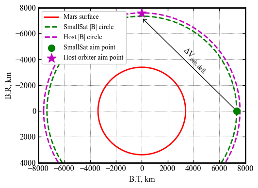
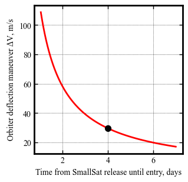

Section 3.8 - Mars SmallSat Aerocapture - Orbiter Deflection Manuever¶
[15]:
import numpy as np
from astropy.time import Time
from AMAT.arrival import Arrival
[16]:
arrival = Arrival()
arrival.set_vinf_vec_from_lambert_arc(lastFlybyPlanet='EARTH',
arrivalPlanet='MARS',
lastFlybyDate=Time("2020-07-30 00:00:00", scale='tdb'),
arrivalDate=Time("2021-02-18 00:00:00", scale='tdb'))
[17]:
print("Arrival v_inf vector, ICRF: "+str(arrival.v_inf_vec)+" km/s")
print("Arrival VINF MAG: "+str(round(arrival.v_inf_mag, 2))+" km/s.")
print("Arrival Declination: "+str(round(arrival.declination, 2))+" deg.")
Arrival v_inf vector, ICRF: [ 2.23930484 1.20086474 -0.73683366] km/s
Arrival VINF MAG: 2.65 km/s.
Arrival Declination: -1.65 deg.
[18]:
import numpy as np
from AMAT.approach import Approach
[19]:
approach1 = Approach("MARS", v_inf_vec_icrf_kms=arrival.v_inf_vec,
rp=(3389.5+52)*1e3, psi=3*np.pi/2,
is_entrySystem=True, h_EI=120e3)
approach2 = Approach("MARS", v_inf_vec_icrf_kms=arrival.v_inf_vec,
rp=(3389.5+250)*1e3, psi=np.pi)
[20]:
import matplotlib.pyplot as plt
from matplotlib import rcParams
[116]:
fig = plt.figure()
fig.set_size_inches([5.5, 5.5])
plt.rc('font',family='Times New Roman')
params = {'mathtext.default': 'regular' }
plt.rcParams.update(params)
theta_arr = np.linspace(0, 2*np.pi, 101)
X_MARS = approach1.planetObj.RP*np.cos(theta_arr)/1e3
Y_MARS = approach1.planetObj.RP*np.sin(theta_arr)/1e3
plt.plot(X_MARS, Y_MARS, color='red', linestyle='solid', linewidth=2.0, label='Mars surface')
BR1 = np.dot(approach1.b_mag*approach1.B_vec_bi_unit, approach1.R_vec_bi_unit)
BT1 = np.dot(approach1.b_mag*approach1.B_vec_bi_unit, approach1.T_vec_bi_unit)
BR2 = np.dot(approach2.b_mag*approach2.B_vec_bi_unit, approach2.R_vec_bi_unit)
BT2 = np.dot(approach2.b_mag*approach2.B_vec_bi_unit, approach2.T_vec_bi_unit)
X_SS = (BT1/1e3)*np.cos(theta_arr)
Y_SS = (BT1/1e3)*np.sin(theta_arr)
plt.plot(X_SS, Y_SS, color='g', linestyle='dashed', linewidth=2.0, label='SmallSat |B| circle')
X_HS = (BR2/1e3)*np.cos(theta_arr)
Y_HS = (BR2/1e3)*np.sin(theta_arr)
plt.plot(X_HS, Y_HS, color='m', linestyle='dashed', linewidth=2.0, label='Host |B| circle')
plt.scatter(BT1/1e3, BR1/1e3, marker="o", s=100, color='g', label='SmallSat aim point', zorder=10 )
plt.scatter(BT2/1e3, BR2/1e3, marker="*", s=200, color='m', label='Host orbiter aim point', zorder=10 )
plt.gca().invert_yaxis()
plt.gca().set_aspect('equal')
plt.xlabel('B.T, km' ,fontsize=12)
plt.ylabel('B.R, km' ,fontsize=12)
plt.yticks(fontsize=12)
plt.xticks(fontsize=12)
ax = plt.gca()
ax.tick_params(direction='in')
ax.yaxis.set_ticks_position('both')
ax.xaxis.set_ticks_position('both')
ax=plt.gca()
ax.xaxis.set_tick_params(direction='in', which='both')
ax.yaxis.set_tick_params(direction='in', which='both')
ax.xaxis.set_tick_params(width=1, length=4)
ax.yaxis.set_tick_params(width=1, length=4)
ax.xaxis.set_tick_params(width=1, length=4, which='minor')
ax.yaxis.set_tick_params(width=1, length=4, which='minor')
ax.xaxis.grid(which='major', color='k', linestyle='dotted', linewidth=0.5)
ax.xaxis.grid(which='minor', color='k', linestyle='dotted', linewidth=0.0)
ax.yaxis.grid(which='major', color='k', linestyle='dotted', linewidth=0.5)
ax.yaxis.grid(which='minor', color='k', linestyle='dotted', linewidth=0.0)
for axis in ['top', 'bottom', 'left', 'right']:
ax.spines[axis].set_linewidth(2)
plt.legend(loc='upper left', fontsize=10, framealpha=1)
plt.annotate('', xy=(BT2*0.85/1e3, BR2*0.95/1e3), xytext=(BT1/1e3, BR1/1e3),
va="center", ha="center",
arrowprops=dict(arrowstyle='->, head_width=0.3', facecolor='blue'), fontsize=10, color='k',
bbox=dict(boxstyle='round,pad=0.2', fc='w', ec='k', alpha=1))
plt.text(3000, -3000, r'$\Delta V_{orb. defl.}$', rotation=-45, fontsize=12)
plt.xlim([-8000, 8000])
plt.ylim([4000, -8000])
plt.savefig('../../../data/acta-astronautica/smallsat-mission-concepts/mars/mars-smallsat-b-plane.png', dpi= 300,bbox_inches='tight')
plt.savefig('../../../data/acta-astronautica/smallsat-mission-concepts/mars/mars-smallsat-b-plane.pdf', dpi=300,bbox_inches='tight')
plt.savefig('../../../data/acta-astronautica/smallsat-mission-concepts/mars/mars-smallsat-b-plane.eps', dpi=300,bbox_inches='tight')
plt.show()

[60]:
import numpy as np
from AMAT.maneuver import ProbeOrbiterDeflection
[86]:
r_dv_rp_arr = np.linspace(75, 481, 101)
dv_arr = np.zeros(101)
tof_arr = np.zeros(101)
for i in range(0, len(r_dv_rp_arr)):
deflection = ProbeOrbiterDeflection(arrivalPlanet="MARS",
v_inf_vec_icrf_kms=np.array([ 2.23930484, 1.20086474, -0.73683366]),
rp_probe=(3389.5+52)*1e3, psi_probe=3*np.pi/2, h_EI_probe=120e3,
rp_space=(3389.5+250)*1e3, psi_space=np.pi,
r_dv_rp=r_dv_rp_arr[i])
dv_arr[i] = deflection.dv_maneuver_mag
tof_arr[i] = deflection.TOF_probe
i+=1
[119]:
fig = plt.figure()
fig.set_size_inches([3.25, 3.25])
plt.rc('font',family='Times New Roman')
params = {'mathtext.default': 'regular' }
plt.rcParams.update(params)
plt.plot(tof_arr, dv_arr, color='r', linestyle='solid', linewidth=2)
plt.xlabel('Time from SmallSat release until entry, days' ,fontsize=10)
plt.ylabel('Orbiter deflection maneuver '+r'$\Delta V$'+', m/s' ,fontsize=10)
plt.yticks(fontsize=10)
plt.xticks(fontsize=10)
ax = plt.gca()
ax.tick_params(direction='in')
ax.yaxis.set_ticks_position('both')
ax.xaxis.set_ticks_position('both')
ax=plt.gca()
ax.xaxis.set_tick_params(direction='in', which='both')
ax.yaxis.set_tick_params(direction='in', which='both')
ax.xaxis.set_tick_params(width=1, length=4)
ax.yaxis.set_tick_params(width=1, length=4)
ax.xaxis.set_tick_params(width=1, length=4, which='minor')
ax.yaxis.set_tick_params(width=1, length=4, which='minor')
ax.xaxis.grid(which='major', color='k', linestyle='dotted', linewidth=0.5)
ax.xaxis.grid(which='minor', color='k', linestyle='dotted', linewidth=0.0)
ax.yaxis.grid(which='major', color='k', linestyle='dotted', linewidth=0.5)
ax.yaxis.grid(which='minor', color='k', linestyle='dotted', linewidth=0.0)
for axis in ['top', 'bottom', 'left', 'right']:
ax.spines[axis].set_linewidth(2)
plt.scatter(4.0, 29.587, marker="o", s=50, color='xkcd:black', zorder=10)
plt.savefig('../../../data/acta-astronautica/smallsat-mission-concepts/mars/mars-smallsat-deflection-dv.png', dpi= 300,bbox_inches='tight')
plt.savefig('../../../data/acta-astronautica/smallsat-mission-concepts/mars/mars-smallsat-deflection-dv.pdf', dpi=300,bbox_inches='tight')
plt.savefig('../../../data/acta-astronautica/smallsat-mission-concepts/mars/mars-smallsat-deflection-dv.eps', dpi=300,bbox_inches='tight')
plt.show()

[11]:
deflection = ProbeOrbiterDeflection(arrivalPlanet="MARS",
v_inf_vec_icrf_kms=np.array([ 2.23930484, 1.20086474, -0.73683366]),
rp_probe=(3389.5+52)*1e3, psi_probe=3*np.pi/2, h_EI_probe=120e3,
rp_space=(3389.5+250)*1e3, psi_space=np.pi,
r_dv_rp=278)
[12]:
print("Divert manuever DV: "+str(deflection.dv_maneuver_vec)+ " m/s")
print("Divert manuever DV magnitude: "+str(round(deflection.dv_maneuver_mag,3))+ " m/s")
Divert manuever DV: [ 9.08851784 18.37016456 21.33835808] m/s
Divert manuever DV magnitude: 29.587 m/s
[13]:
print("TOF from probe release to atm. entry interface: "+str(round(deflection.TOF_probe,6))+ " days")
print("TOF from probe release to orbiter periapsis : "+str(round(deflection.TOF_space,6))+ " days")
TOF from probe release to atm. entry interface: 4.00719 days
TOF from probe release to orbiter periapsis : 4.00779 days
Run the following code to generate the approach trajectory plot. The code is also available in the file section-3-8-mars-smallsat-orbiter-deflection.py.
from mayavi import mlab
import numpy as np
from tvtk.tools import visual
from AMAT.approach import Approach
from astropy.time import Time
from AMAT.arrival import Arrival
def Arrow_From_A_to_B(x1, y1, z1, x2, y2, z2):
ar1 = visual.arrow(x=x1, y=y1, z=z1)
ar1.length_cone = 0.4
arrow_length = np.sqrt((x2 - x1) ** 2 + (y2 - y1) ** 2 + (z2 - z1) ** 2)
ar1.actor.scale = [arrow_length, arrow_length, arrow_length]
ar1.pos = ar1.pos / arrow_length
ar1.axis = [x2 - x1, y2 - y1, z2 - z1]
return ar1
arrival = Arrival()
arrival.set_vinf_vec_from_lambert_arc(lastFlybyPlanet='EARTH',
arrivalPlanet='MARS',
lastFlybyDate=Time("2020-07-30 00:00:00", scale='tdb'),
arrivalDate=Time("2021-02-18 00:00:00", scale='tdb'))
probe = Approach("MARS",
v_inf_vec_icrf_kms=np.array([ 2.23930484, 1.20086474, -0.73683366]),
rp=(3389.5+52)*1e3, psi=3*np.pi/2,
is_entrySystem=True, h_EI=120e3)
space = Approach("MARS",
v_inf_vec_icrf_kms=np.array([ 2.23930484, 1.20086474, -0.73683366]),
rp=(3389.5+250)*1e3, psi=np.pi)
north_pole_bi_vec = probe.ICRF_to_BI(arrival.north_pole)
theta_star_arr_probe = np.linspace(-2, probe.theta_star_entry, 101)
pos_vec_bi_arr_probe = probe.pos_vec_bi(theta_star_arr_probe)/3389.5e3
theta_star_arr_space = np.linspace(-1.85, 0.0, 101)
pos_vec_bi_arr_space = space.pos_vec_bi(theta_star_arr_space)/3389.5e3
x_arr_probe = pos_vec_bi_arr_probe[0][:]
y_arr_probe = pos_vec_bi_arr_probe[1][:]
z_arr_probe = pos_vec_bi_arr_probe[2][:]
x_arr_space = pos_vec_bi_arr_space[0][:]
y_arr_space = pos_vec_bi_arr_space[1][:]
z_arr_space = pos_vec_bi_arr_space[2][:]
u = np.linspace(0, 2 * np.pi, 100)
v = np.linspace(0, np.pi, 100)
x = 1*np.outer(np.cos(u), np.sin(v))
y = 1*np.outer(np.sin(u), np.sin(v))
z = 1*np.outer(np.ones(np.size(u)), np.cos(v))
x1 = 1.040381198513972*np.outer(np.cos(u), np.sin(v))
y1 = 1.040381198513972*np.outer(np.sin(u), np.sin(v))
z1 = 1.040381198513972*np.outer(np.ones(np.size(u)), np.cos(v))
x_ring_1 = 1.1*np.cos(u)
y_ring_1 = 1.1*np.sin(u)
z_ring_1 = 0.0*np.cos(u)
x_ring_2 = 1.2*np.cos(u)
y_ring_2 = 1.2*np.sin(u)
z_ring_2 = 0.0*np.cos(u)
mlab.figure(bgcolor=(0,0,0))
s1 = mlab.mesh(x, y, z, color=(0.8,0,0.2))
s2 = mlab.mesh(x1, y1, z1, color=(0.8,0,0.2), opacity=0.3)
r1 = mlab.plot3d(x_ring_1, y_ring_1, z_ring_1, color=(1,1,1), line_width=1, tube_radius=None)
#r2 = mlab.plot3d(x_ring_2, y_ring_2, z_ring_2, color=(1,1,1), line_width=1, tube_radius=None)
p1 = mlab.plot3d(x_arr_probe, y_arr_probe, z_arr_probe, color=(0,1,0), line_width=3, tube_radius=None)
p2 = mlab.plot3d(x_arr_space, y_arr_space, z_arr_space, color=(1,0,1), line_width=3, tube_radius=None)
mlab.plot3d([0, 1.05 * north_pole_bi_vec[0]],
[0, 1.05 * north_pole_bi_vec[1]],
[0, 1.05 * north_pole_bi_vec[2]])
mlab.show()
[120]:
from IPython.display import Image
Image(filename='../../../plots/mars-smallsat-and-orbiter-approach.png', width=1200)
[120]:
{kind=link}
[122]:
from IPython.display import Image
Image(filename='../../../plots/mars-smallsat-and-orbiter-orbits.png', width=1200)
[122]:
{kind=link}